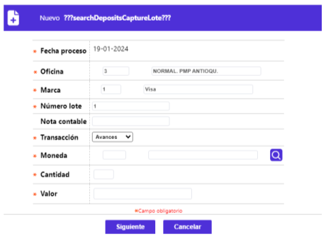
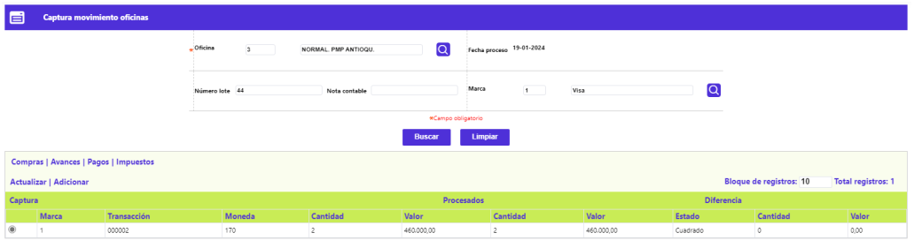

Captura de Movimientos oficina
Adicionar Avances: Grupo de datos que contiene la información necesaria correspondiente a esta clase de transacción. Los campos relacionados con la tapa deben capturarse como se hace en la captura de compras.
Si el usuario a seleccionado la Transacción Avances e invoca la opción Adicionar, se despliega el siguiente formulario:

Fecha proceso |
Campo de salida o no ingresable, que contiene la fecha del sistema seleccionada en el filtro inicial. |
Oficina |
Campo en el que se muestra el código de la oficina y descripción de la oficina para la cual se va a capturar. |
Marca |
Campo que posee lista de valores poblada mediante la opción Franquicias del Núcleo. Si la entidad requiere generar contabilidad por marca o franquicia, no debe mezclar dentro del mismo lote o tapa movimiento de diferentes franquicias. |
Establecimiento |
Campo alfanumérico de 11 dígitos, obligatorio, en el que se registra el código único que identifica, ante la franquicia, al establecimiento donde se realiza el consumo. |
Número tarjeta |
Campo alfanumérico de 23 dígitos, no obligatorio, en el que se digita el número de la tarjeta mediante la cual se realiza el Avance, el sistema valida la existencia de la misma dentro del sistema y asigna los ceros a la izquierda hasta completar la longitud total del campo. |
Número comprobante |
Campo numérico de 7 dígitos, no obligatorio, en el que se registra el número del voucher o comprobante correspondiente el Avance. |
Fecha comprobante |
Campo tipo fecha, en formato DDMMYYYY, debe contener la fecha física de cada uno de los comprobantes, es la base para determinar la antigüedad de los mismos y verificar que no excedan el plazo máximo para su consignación determinada en Parámetros operativos. |
Número de autorización |
Campo alfanumérico de 6 dígitos, no obligatorio, en el que se registra el número de autorización del Avance asignado por el sistema o por la franquicia. |
Plazo |
Campo numérico de 2 dígitos, no obligatorio, en el que se relaciona la cantidad de periodos solicitados por el tarjetahabiente en el voucher para cancelar el Avance. En caso de no digitarse el sistema tomará los valores por defecto señalados en los parámetros de Transacciones por empresa del Núcleo. |
Causal |
En el momento de la captura del comprobante el usuario puede evidenciar inconsistencias en los comprobantes, tales como falta de firma, falta de sellos, etc., previendo posibles fraudes. El campo provee de una lista de valores poblada previamente en la opción Causales de rechazo de transacciones del Núcleo, las cuales tienen la característica de ser causal visual, de las cuales el usuario selecciona la que se ajusta al evento sucedido. |
Total |
Campo numérico con capacidad para una suma hasta de 16 dígitos incluidos dos decimales, no obligatorio, que contiene el monto total del Avance. |
Actualizar: Al activar ese enlace se despliega un formulario en el cual los únicos campos modificables son: Establecimiento, Número tarjeta, Número comprobante, Fecha comprobante, Número autorización, Plazo, y Causal.
